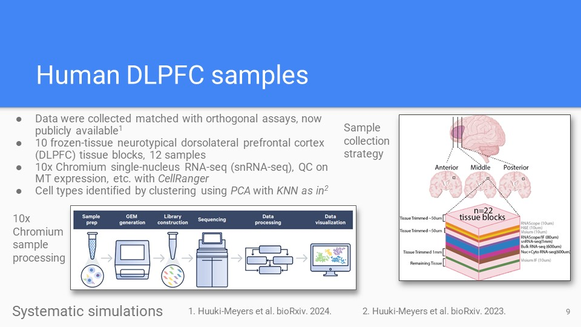
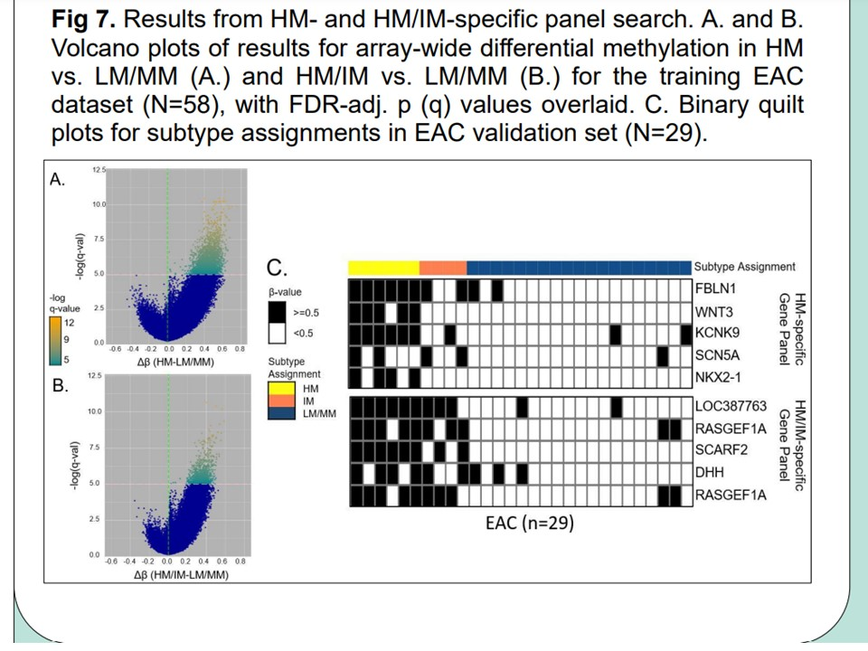

Presentations
ENAR Spring Meeting 2024
-
Title/Intro
Presents results of bulk transcriptomics deconvolution and single-nucleus RNA-seq analysis of human dorsolateral prefrontal cortex, completed during a Postdoctoral Research Fellowship with Johns Hopkins Biostatistics.
Zenodo -
Deconvolution review
Recent topics in bulk transcriptomics deconvolution, reviewed in out recent Genome Biology article (Maden et al 2023).
Zenodo Maden et al. Genome Biol. 2023 -

Novel cortex data
Novel human cortex orthogonal assay dataset for bulk transcriptomics deconvolution algorithm benchmarks, published in our recent manuscript (Huuki-Meyers et al 2024).
Zenodo Huuki-Meyers et al. BioArxiv 2024. -
Pseudobulk simulations
Pseudobulk results in novel cortex data. Shows neuron predictions for two-cell type predictions. Also outlined in recent software vignettes, and recent manuscript (Maden et al 2024).
Zenodo Vignette Maden et al. BioArxiv 2024. -
The lute R package
The lute deconvolution framework and software for deconvolution experiments. Available now on Bioconductor, and described in our recent publication (Maden et al 2024)
Zenodo Bioconductor Maden et al. BioArxiv 2024. -
Thanks and acknowledgements
This work was made possible by the efforts of Prof. Stephanie Hicks and our "deconvo group" collaborators at the Lieber Institute for Brain Development.
Zenodo
Bioc 2023 Short Talk, RNA-seq
-

Title/Intro
Introduction to lute, deconvolution software developed for Postdoctoral Research Fellowship with Johns Hopkins Biostatistics.
Slides -
Deconvolution formula
Mathematical representation of reference-based bulk transcriptomics deconvolution as a matrix product problem. Illustrates the product operation to adjust for bias from cell type-specific size divergence.
Slides -
Multi-subject references
Description of multi-subject references for deconvolution, and increasing availability of algorithm benchmark datasets across tissues and conditions.
Slides -
Framework software
Describes novel generics, methods, and classes introduced in the lute software framework for deconvolution, and illustrates supported deconvolution algorithm relationships.
Slides
Conference: Bioc2021, Package Demo/Workshop
Date: 8/4/21
Location: Remote
-
Workshop intro
Package demo/workshop presentation for recountmethylation. Shows how to access, query, and analyze public DNAm array data which were compiled from the NCBI GEO public records. Includes overview of the Illumina platforms, probe annotations, regular expressions, and data classes of importance.
Slides -
Array technologies
Overview of different types of DNAm platforms, including Illumina's HM450K and EPIC BeadArray chips. Summarizes the probe annotation information and some facts about array dimensions and ways to handle IDAT-derived molecular signals.
Slides Bioconductor -
ETL/Data engineering
Details about the ETL processing pipeline developed to ingest, parse, harmonize, and analyze mined DNAm array and experiment data. Includes dependencies, R/Bioconductor packages, and some basic functions and data parsing steps of the ETL pipeline.
Slides Bioconductor
Conference: AACR 107th Annual Meeting 2016, Poster Presentation
Date: 4/19/16
Location: New Orleans, LA
-
Poster overview
Preview of poster presentation, including: 1. background about the biological and clinical importance of DNA methylation biomarkers; 2. details about data processing pipeline, normalizations, and bias corrections, 3. results of subtype identification from clustering, important pathway characterization from integrative genomics analysis, and panel identification from joint EWAS/TWAS; 4. acknowledgements, funding and citations.
Slides Gut article (Yu et al. 2019) -
Methods
Methods details, from experiment design and sample collection to data processing, visualization, and analysis. Matched and unmatched Barrett's (BE) and Easophageal adenocarcinomas (EAC) biopsies were processed on DNA methylation microarrays. Epigenome-wide association studies were performed, followed by joint epigenetic-transcriptomic profiling to identify biomarker panel candidates. Preprocessing was accomplished with R/Bioconductor packages from IDAT/raw image formats.
Slides Gut article (Yu et al. 2019) -
Methylator subtypes
DNA methylation subtypes in BE and EAC were identified from iterative cluster analysis using a cluster method validated previously from colorectal cancer DNAm data. Subtypes were determined based on differential methylation at CpG array probes of high methylation variances. Concordance of subtypes within and across samples and tissues were evaluated. The top high-confidence subtypes were validated downstream using integrative genomics.
Slides Gut article (Yu et al. 2019) -
Pathway characterization
We performed gene set enrichment and pathway characterization of gene ontology (GO) terms to determine biological, biomolecular, and clinical importance of methylator subtypes. We found evidence of proliferation pathway upregulation in high-methylator subtypes, which also showed the greatest differential methylation extent.
Slides Gut article (Yu et al. 2019) -

Biomarker panel
Biomarker panel consisting of methylator subtype CpG probes from HM450K arrays which identify high-methylator subtype members/clusters with high confidence across samples and either BE or EAC biopsy types.
Slides Gut article (Yu et al. 2019) -
Acknowledgements
Shows the acknowledgements, conclusions, and citations portion of the poster. Research was primarily conducted at Fred Hutch. Special thanks to Grady Lab members for their support, including Ming Yu (co-first author of manuscript), and William Grady (PI and senior investigator).
Slides Gut article (Yu et al. 2019)